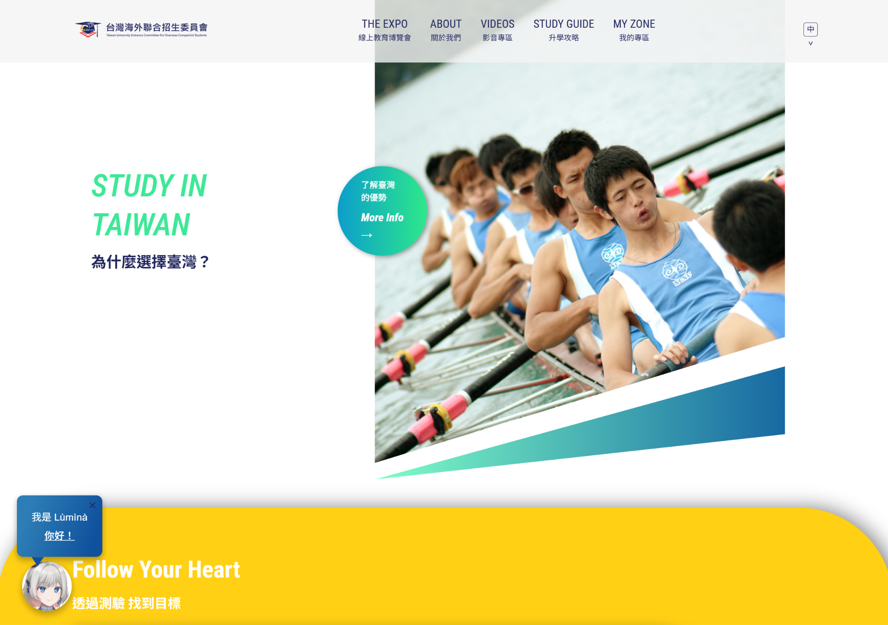
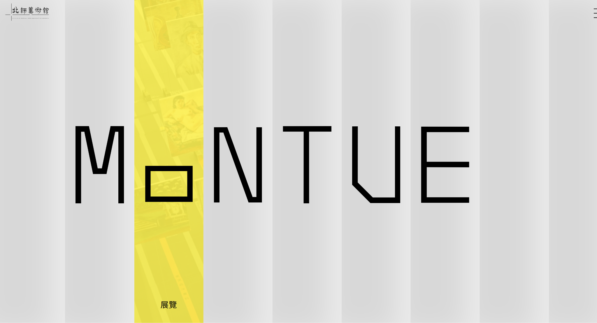
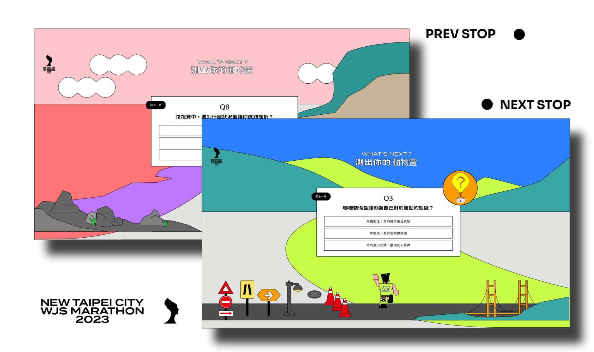
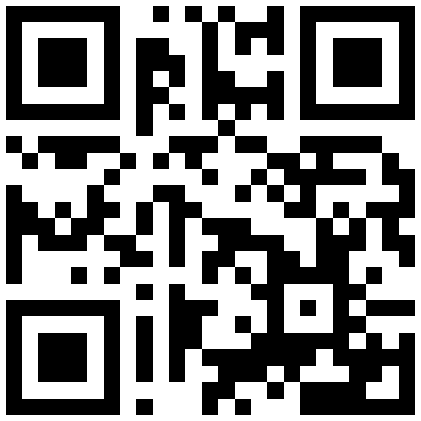

好設計
值得被好好接住
設計方向由你們主導；網站落地、資安、無障礙與長期維運，我們在後面接住。
設計不是一次輸出，是判斷的累積
工具會變，生成會變快，但這四件事一直都是靠人累積出來的。
知道哪一版比較對，而且說得出為什麼對。
這個品牌從哪裡來、要對誰說話、不能踩什麼。
看過夠多案子，才知道什麼該留、什麼該砍。
能把客戶說不清楚的期待，翻成可以被執行的方向。
方向由你們定，落地多一層支撐
可以白牌、可以共同掛名，也可以只在幾個風險比較高的段落進場。



不論設計從哪裡開始，問題都在交付前後
每家公司使用工具的方式都不一樣，我們不預設；我們處理的是它要怎麼變成一個正式網站。
早一點一起看，設計就少走冤枉路
很多回頭修改不是因為設計不好，而是工程、維運、無障礙的條件太晚被看見。
設計稿是理想狀態，網站上線後大部分時間不在理想狀態
這些是過往協作、網站落地與客戶上稿時常遇到的狀態，適合提早一起看。
| 常見狀態 | |
|---|---|
| 文案 | 標題從 8 字變 40 字、摘要被截斷、換行位置很難看、欄位空白。 |
| 圖片 | 比例不符、尺寸不足、沒照規格裁切、活動前一天還缺圖。 |
| 數量 | 列表只有 1 筆，或一次 200 筆——版面完全是兩件事。 |
| 意外 | 表單送出失敗、API 掛掉、客戶自己進 CMS 改了內容。 |
客戶問資安時，你們不用只能說「我再問工程師」
設計公司不需要變成資安公司，但需要一個回答得出來、也寫得成文件的技術夥伴。（點問題可展開我們的回答口徑）
你們有沒有 ISO 27001？
資料放在哪裡？誰能存取？
有沒有備份？多久一次？
弱點掃描與修補怎麼做？
個資外洩要怎麼通報？
SLA 怎麼寫？出事誰處理？
無障礙早一點看，設計就少一點回頭改
很多條件在設計階段就能一起看；等工程完成才發現，修改成本會高很多。
讓作品後續被看見的樣子，不要太快走歪
網站交付後由客戶決定怎麼使用；我們能做的是把比較不容易被改壞的結構先做好。
- CMS 欄位設計與上稿規範
- 圖片比例、裁切焦點與 fallback
- 模組開關與各種內容狀態
- 備份、更新節奏與 SLA
- 交接文件與後台操作說明
我們不能保證作品永遠不變
客戶擁有網站與內容的決定權。但如果網站很快被改壞、壞掉沒人修、活動頁越長越不像原本的品牌，受傷的不只是作品集，也會影響品牌端對下一次合作的信心。
把規範與維運機制先整理好，它就比較有機會被好好維護。
有些案子設計是關鍵，有些案子工程與資安是關鍵
最好的方式不是誰吃掉誰，而是一起判斷這個案子適不適合合作投。
合作可以從很小的地方開始
就算你們已經有配合的工程夥伴也沒關係，先合作一次，彼此就知道節奏合不合。
好設計
值得被好好接住
如果過去有已經轉成網站的專案，或上線後碰過一些維護、內容、資安、無障礙的狀況，我們可以找一次時間一起看。先交換經驗，再慢慢長出適合彼此的合作方式。

設計團隊的網站落地、資安與共同提案夥伴
如果合作要長期化，界線可以先講清楚
第一次見面不需要談到這裡；等對方主動問到長期合作、共同投標或掛名方式再翻開。
客戶窗口
誰對客戶說話、誰處理需求變更。
掛名方式
白牌、共同掛名，或技術協力。
分工與交付
設計佔比、工程佔比與交付項目。
報價與分潤
報價方式、分潤與後續維運歸屬。